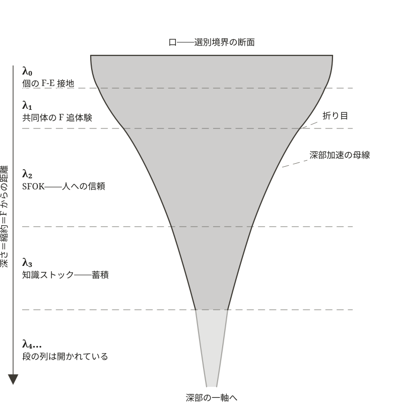

第18章 参照されるから、存在する——多段圧縮と参照系
自分では理論を導出できないままでも、相対性理論を正しいと信じている。読んだことのない条文に、従っている。誰かの確かめを信じて、確かめずに知る。この足場を、私たちは「社会的既知感への信認」（第10章）で自分のものとして認めた。あの委譲が、本章に戻ってくる。
「文明の出力の幾何」（第17章）が取り出した幾何では、漏斗は深部へ向かうほど急峻に絞られ、側面壁には、勾配の変わる折り目が刻まれていた。では、この深さは、何でできているのか。答えの糸口は、いま思い出した足場にある。深さを継ぎ足させてきたのは、誰かの確かめへの信頼である。
本章は、この深さ方向を内側から開く。漏斗に流れ込む素材——流動 F——とは何か。信頼は、誰から誰へ、どこまで継がれうるのか。そして段を重ねた先で、参照と存在の因果は反転する。「存在するから、参照される」が、「参照されるから、存在する」へ。
§18-1 F とは何か
第17章 §17-1 では「大量の流れ」として、§17-4 では「漏斗の上面に流入するもの」として、F はすでに幾度も現れてきた。だが、F の正体——F は何で、どこから来るか——は、まだ取り出していない。文明レイヤーにとって、F とは何か。
F が何で、どこから来るかは、第Ⅰ部で取り出してある。一つの系にとっての Flux は、自系の外で動くものが外へ残し、あるいは送り出したものである——命題 FLUX-1（「圧縮から創発する世界」第2章 §2-5）。階層が違えば中身は質的に異なるが、構造的位置は同じ——自系の選別構造の外側にあって、自系にとって素材として作動するもの。
F の存在は、選別構造の対称性破れ（第15章 §15-1〜§15-2）の裏面である。各系が選別構造で世界を切り取ることで、外側に F が立ち上がる。F がなければ、選別構造は自らの出力だけを循環させる閉じた系になる。文明レイヤーにとっての F の中身は——自然界の作動の残余、他の文明、過去の文明、他の主体（多段圧縮構造の λ₀ の主体を含む——詳細は §18-2）。
そして、この中身の列挙は、文明が F の供給源を求めうる三つの方向を予告している。同時代の他者の選別構造へ（空間）、時間を隔てた世代の選別構造へ（時間）、そして自系自身の内側へ（実存）。それぞれの方向で供給がどう立ち、その作動コストがどこへ転嫁されるかは、本章と第19章の装置を経たのち、「空間的不安定」（第20章）からの三章が正面から開く。
文明レイヤーの特殊性——選別構造を改変する能力
文明レイヤーには、他のレイヤーにはない特殊性がある。選別構造自体を改変する能力である（「圧縮から創発する世界」第2章 §2-6、第15章 §15-3）。
物理レイヤーでは、選別構造は法則として固定されている。生命レイヤーでは、選別構造は進化を介して可変だが、個体の生涯のうちに動かせるものではない。文明レイヤーでは、表象能力によって、選別構造を生涯のうちに、あるいは対話の場面のうちに、組み替えることができる。
この能力は、F の取り扱いにも特殊性を生む。
自己 Stock を F として利用するモード
生命にも、自己 Stock を F として一時的に利用する前駆系がある——体内に蓄積した脂肪を燃やす、など。だが、生命は遺伝形質で制約されるため、自己 Stock の利用には構造的上限がある。
文明レイヤーは違う。選別構造を改変できるため、自分自身の排出物（自己 Stock）を F として利用するモードに、構造的上限なく入れる。生命の前駆系と文明の本格的なモードのあいだに、量的差異が質的差異を生むスペクトル的な構造がある。
これは、自己言及相（§18-4 で詳述、「知識の重さ」第9章 §9-3）の起源である。動いている系一般がもつ内部連鎖と緩衝（命題 FLUX-3、「圧縮から創発する世界」第2章 §2-5）が、文明レイヤーで極限化した相にあたる。文明が選別構造を深く積み上げると、自分の排出物を F として認識して、自分自身に流し戻すモードに入る。F の本質「別の選別構造の残余」が、自分自身の前段の選別構造の残余に置き換わる。表象能力が、自分の出力を「別物」として認識する能力を提供する——だから自分の出力を F として扱える。
F のコスト転嫁——他者の選別構造の作動コストを肩代わりさせる
文明レイヤーが F を得るとき、別の選別構造が作動している。その作動には、コストがかかる。
ここに、文明レイヤー固有のもう一つの構造が立つ。自系にとって必要な F の供給のために、他者の選別構造を利用し、F 供給のための作動コストを肩代わりさせる。これが、維持コストを他の主体へ移す操作（コスト転嫁、「圧縮から創発する世界」第2章 §2-6）を、F の側から見た姿である。
文明が自然界から F（資源、エネルギー、生態系サービス）を得るとき、自然界の選別構造が F を生成する作動コスト（生態系の維持、土壌の生成、気候の安定）を、文明は払わない。自然界に作動コストを肩代わりさせている。
保つコストの転嫁（命題 FUNNEL-1、第17章 §17-2）は、F 供給コストの転嫁と接続する。両者は文明レイヤー固有の同型現象として現れる。
§18-2 多段圧縮構造の階梯——λ₀ から λ₄ へ
漏斗モデルの基本形は、接続可能圏 Ω の内部に、作動圏・漏斗・殻の幾何を、ある選別構造の立ち上がりとして描いた。だが、文明の作動のなかで漏斗は、一つだけ立ち上がるのではない。選別構造が立ち上がると、その出力が次の段の選別構造の素材になる——これが多段圧縮構造の入れ子構造である。
本書がこれまで別々に立ててきた装置——神話的MANES（「神話的MANES」第8章）、SFOK（「社会的既知感への信認」第10章）、知識ストック（「知識の重さ」第9章）——は、多段圧縮構造の階層として読むと、一つの構造の異なる段階として現れる。
選別構造の出力が次の段の素材になるこの入れ子は、多段の縮約の、段と段を表象による信頼でつなぐ文明レイヤー固有の現れである。本書はこの多段構造を展開実現帯域 λ と呼び、その内部の段階を λ₀・λ₁・λ₂・λ₃ と記す。段の列は、この四つで閉じない。展開実現帯域 λ は、文明が実際に展開し実現した帯域——接続可能圏 Ω の内部で、選別構造が現に立ち上がっている範囲——を画する。λ₀–λ₃ はその内部構造であり、F からの距離に応じた同心的な層をなす。
この並びは、第Ⅱ部で装置を解剖した章の順とは一致しない。章は装置ごとの解剖の順で並び、段は F からの距離の順で並ぶ。人への信頼（SFOK）の産物が固定されて、はじめて外部の蓄積（知識ストック）が立つ、という生成の順である（本節後半・参照化と蓄積化の交代）。そして、第Ⅱ部の第四の装置——「未来への希望」（第11章）——は、この階層に独立の段を持たない。F からの距離を新たに開く装置ではなく、λ₁ が開く世代軸の連なりを、未来の側へ走らせる時間方向の作動だからである。三つの装置が段を立て、第四の装置が、段の上を時間の向きに走る。この作動の中身——前借りとその転嫁——は、「時間的不安定」（第21章）が運用する。
ここに、本書の核心構造が一つ立つ。展開実現帯域 λ が、創発可能帯域 HZ に収まるとは限らない。文明は展開し実現する（λ）。だが、その展開が動的安定の帯域（HZ）に収まる保証はない。収まるための構造条件を探ること——これが本書の問いの帯域的定式化である。
各段階で扱う F は、F の定義（F は別の選別構造の残余） に一貫して従う。λ₀ では物理・化学・生命レイヤーの残余に直接接地し、λ₁ では共同体が同じ F を追体験し、λ₂・λ₃ では λ₀ の主体の FOE を信頼することで間接的に別のレイヤーの残余に接続する。F の供給源の位置（外部の別の選別構造か、自系の前段の出力か）が、健全な段階と自己言及相とを分ける。
λ₀（第一段階）：個の F-E 接地
最初の段階は、個の主体が F に直接接地する作動である。
個の E が F に接触する。E が仕事を投入する。その結果、O として再現可能な選別構造（勾配） が形成される。「再現可能」とは、一回限りの試行ではなく、操作として繰り返し作動できる構造として固定されることをいう。E が立てたものが、O のレパートリーとして固定される。
これが「立てるコスト」の初期形態である。F-E 接触から、E の仕事の投入を経て、O が立ち上がる。
身近な事例として、個人の身体・経験のなかで動いている可能性の流動を、特定の動き方・判断・手順として圧縮する作動がここに位置する。技能の獲得、習熟、専門能力の身体化——いずれも、個の F-E 接地から立ち上がる λ₀ の例である。
λ₀ の漏斗の殻には、「他の動きにもなりえた可能性」「他の判断にもなりえた可能性」が落ちる。だが、λ₀ では、E が立っている範囲で「F-E か --E」の区別が立つ——F の現実への接地が、E の側に保たれている。
λ₁（第二段階）：共同体の F 追体験
次の段階は、共同体としての E が、同じ F に接触する作動である。ただし、共同体の各成員は、独力で F に接地するのではない。λ₀ の主体に導かれて、同じ F を追体験する——物語を共有し、儀礼を共にし、場所に立つ。各人が個別に F に接触する経験を経て、それぞれに O を形成し、共同体の選別構造が拡がる。
これが、「神話的MANES」（第8章）の構造である。「神話的MANES」（第8章）は、神話を機構として保持し、機構として継承する人間のあり方を取り出した。苦悩・憧憬・希求・好奇心の社会的外部化と、連なりの中の信が、世代を越えて引き渡されていく装置である。同章 §8-5 末の言葉でいえば、これは滲みを保つ運び方である——「物語を語り、儀礼を共にし、場所に立つ、その都度の身体を要する」運び方。
λ₁ では、共同体の各成員が F に接地する経験を経るため、F の質感が保たれる。「F-E か --E」の区別が、共同体のなかで立つ。これは世代軸方向の「我ら」の拡張である——過去の主体から、現在の主体へ、未来の主体へ。
なお、λ₁ は委譲なしの媒介という中間の性格を持つ——各成員は F を自ら追体験するが、λ₀ の主体の導きという媒介を経る。錨泊FOE の核をなすのは λ₀ であり、λ₁ は媒介の初段にあたる。
λ₂（第三段階）：λ₀ の FOE への信頼
第三段階は、F の追体験を省くことから始まる。
共同体の E が、λ₀ の主体の FOE を信頼する。信頼することで、F の追体験を省きながら、共同体の選別構造を形成する。これが「信じることのラベル化」——SFOK（「社会的既知感への信認」第10章）——の構造である。
「社会的既知感への信認」（第10章）は、SFOK を三成分（索引・要約的判断・価値ラベル）として取り出した。共同体の各成員が、知識ストックの内容を直接保持しているのではなく、ラベルを共有することで、巨大な選別構造を共同体のなかで運用する装置である。
λ₂ は、社会軸方向の「我ら」の拡張である——同時代の他者へ、共同体の境界の外へ。
λ₂ では、F の追体験は省かれる。だが、λ₀ の主体の FOE が、共同体のなかで信頼されているかぎり、F の質感は——直接的でなくとも——保たれる。
λ₃（第四段階）：λ₂ の FOE への信頼
第四段階は、λ₂ の FOE を、さらに信頼する作動である。
λ₂（SFOK の網）のもとで立ち上がった選別構造を、F の追体験を省いたまま、固定化された記録として外部に物質化する。これが「信じたことの沈殿」——知識ストック（「知識の重さ」第9章）——の構造である。「神話的MANES」（第8章 §8-5）末の言葉でいえば、これは滲みを捨てて記録に固定する運び方である。「読み返されなくても累積し、自走する。意味は…操作可能な構造の側へ移っている」運び方。
λ₃ は、累積軸方向の「我ら」の拡張である。個別の身体・経験から離れて、固定化された外部知識ストックとしての厚みを獲得する。
λ₃ では、F の追体験は完全に省かれ、信頼の対象が λ₀ ではなく λ₂ の FOE になる。信頼の信頼。F からの距離が、λ₀ → λ₁ → λ₂ → λ₃ と段階的に離れていく。
段の列は、四で閉じない——参照化と蓄積化の交代
λ₀ から λ₃ まで、F からの距離は段階的に離れてきた。列は、ここで尽きるのか。
段を継ぎ足すのは、原理ではなく圧力である。振り返れば、λ₁ から λ₃ への推移は、二つの作動の交代として進んでいた。直接の関与が帯域（「ホモ・デウスとホモ・マネス」第7章）を超えるとき、関与そのものに代えて軽い参照の層が立つ——参照化（λ₂。人の FOE への信頼、SFOK）。参照の産物が身体と経験から切り離されて固定されるとき、蓄積の層が立つ——蓄積化（λ₃。外部知識ストック）。
そして蓄積は、それ自体が参照不能な重さに達する。参照を阻む三重の障壁が積み上がり、整合化計算が爆発する（「知識の重さ」第9章）。ストックが参照の臨界を超えるとき、次に信頼されるのはストックそのものではない。ストックを参照可能にする層である。
λ₄（第五段階）：SFOK参照系への信頼
λ₁〜λ₃ が世代・社会・累積の軸へ「我ら」を広げる段だったのに対し、λ₄ は新しい軸を開かない。広がりを参照可能なまま保つ段である。第五の段階は、λ₃ の蓄積そのものではなく、蓄積を参照可能にする層を信頼する作動である。本書はこの層を SFOK参照系（SFOK reference layer）と呼ぶ。
蔵書が一人の読み手の生涯を超えたとき、人は書物ではなく、目録を引くようになる。索引、要約的判断、価値ラベル——λ₂ で人に向けられていた SFOK の三成分（「社会的既知感への信認」第10章）が、ここでは蓄積へ向け直され、制度の規模で固定される。名が SFOK を冠するのは、この系譜による。目録は、書物への参照を軽くする。そして、目録に載らない書物は、書庫に在りながら、読まれる世界から消える。
λ₄ の萌芽は、蓄積のあるところに古くからある。構造として新しいのは、参照の支配的な経路が SFOK参照系の側へ移ることである——蓄積に触れる参照のほとんどが、参照系を経由してしか起こらなくなった状態。「我ら」の規模と時間を広げるほど、保つべきストックは参照の臨界を超えて厚くなり、この移行は避けがたくなる。どの規模がどの深さを要るかは、第Ⅴ部のバインドとともに立てる（『どこまでが「我ら」か』第24章）。
λ₄ が担うのは、臨界を超えた蓄積のうえで、三つの軸の広がりを参照可能なまま保つことである——広げる段ではなく、広がりを保てるようにする段。だからこの段の破れは、広がりの破れではなく、参照可能性そのものの破れとして現れる。λ₄ が壊れるとき、三段の反転が順に乗る。存在判定の縁がずれ（縁の同一視、FUNNEL-3）、錨が参照可能性へ打ち直され（錨の打ち直し、FUNNEL-4）、供給が参照系へ捕獲される（非対称性への捕獲、FUNNEL-5）。
参照化と蓄積化の交代は、さらに続きうる——SFOK参照系そのものが蓄積されれば、それへの参照系がさらに立つ（λ₅）。段の列に、原理的な終端はない。あるのは、本章の終わりに見る極限相（§18-4）だけである。
なお、第17章 §17-4 で幾何的事実として置いた折り目——側面壁の勾配が変わる位置——は、この生成の痕跡である。折り目の数は原理の定数ではなく、当該の文明がどこまで段を継ぎ足したかという、歴史の変数である。段が深まるほど、F から返る応答は連鎖を長く遡って届く。フィードバックの時間スケール（「圧縮から創発する世界」第2章の三条件の第三）は、段の深さとともに引き延ばされる。

「実存的我ら」の射程と F の質感——「我ら」内の F 接地者
λ₂ 以深の段階で、F の追体験は省かれる。各成員（「我」）は、自分自身で F に接地しているのではない。別の誰かの F との直接接地から得た FOE を信頼することで、間接的に F に接続している。だが、これらの段階で F の質感が保たれるか否かは、共同体としての「実存的我ら」のなかに、現に F と接地している主体（λ₀ の主体）が含まれているかに依存する。
F・O・E の有無を三位置で表す FOEモデルの記法（「不等式の動性」第16章）でいえば、「F-- か ---」（現に流動する可能性のフロンティアか、何もない外側か）の区別は、それ自体としては立たない（命題 FOE-8「引受の外の不可知」、第16章 §16-6）。立つのは「F-E か --E」——E が立っている範囲で、E が手を伸ばしている対象が現に F に接触しているか、空振りか、の区別である。
これを共同体の「我ら」に適用すると、次の構造が見える：
- 「我ら」内に F 接地者がいる：λ₂・λ₃ で各成員（「我」）が F の追体験を省いていても、「我ら」のなかに λ₀ の F-E 接地を保つ主体が含まれているかぎり、共同体としての E は外部の F（別の選別構造の残余）と接地している。「F-E か --E」の区別が、共同体のなかで立ちつづける。F の質感は——個々の「我」にとっては直接的でなくとも——「我ら」としては保たれる。これが λ₁ 以深の健全形態である
- 「我ら」内の F 接地者が失われる：「我ら」のなかに λ₀ の F-E 接地者がいなくなったとき、信頼の連鎖だけが伸びる。「F-E か --E」の区別が立たない。F の質感を失う——これが λ₁ 以深の病理形である
つまり、λ₂ 以深の段階自体が、「我ら」内の F 接地者の有無で別の構造になる。同じ段階のうえで、健全形態と病理形が並走する。
「実存的我ら」がどこまで届くかは、E 側に依存する構造である。漏斗の深さで自動的に決まらない。漏斗が深く彫り込まれた段階でも、「我ら」内に F 接地者が残っているかぎり、F の質感は保たれる。F 接地者が「我ら」から失われたとき、構造はやがて自己言及相——本章の終わりに見る極限相（§18-4）——へ滑り込む。だがその前に、λ₄ が固有に持ち込む機構がある。
§18-3 参照系の三つの反転
縁の同一視——SFOK参照系の縁は、Ω の縁ではない
本書は第2章で、存在を操作的な条件——区別可能性と再同定可能性——から扱ってきた（§2-1）。λ₄ 以深では、この判定の実務が SFOK参照系に委譲される。文明の規模で「区別され、再同定される」を執行するのは、参照系である。
ここに、λ₃ 以浅には存在しなかった縁の同一視の構造が生じる。参照系の縁は、O の作動に依存して日々動く、可動的な境界である。接続可能圏 Ω の縁は、O の被覆からも引受 E からも独立の地形である（第17章 §17-3）。この二つの縁が、同一視される。参照系に載らないものが、「参照されていないもの」ではなく「存在しないもの」として扱われる。LOT は、参照不能の領域から、無へと書き換えられる。
縁の同一視は、怠慢の産物ではない。参照の実務のすべてが参照系を経由する系の内側には、「載っていない」と「無い」を区別する契機が、フィードバックとしては与えられない。区別は、構えとしてしか保たれない——この構えの名は、すでにある（対称性志向、第8章）。
縁の同一視は、健全形態の判定そのものにも及ぶ。λ₃ 以浅では、「我ら」の内に F 接地者が生きていることが、F の質感を保つ条件だった。λ₄ では、それだけでは足りない——参照系が、その接地者への参照を保っていることが要る。生きて接地する主体も、参照系から落ちれば、連鎖にとっては居ないに等しい。
錨の打ち直し
縁の同一視のうえに、もう一段の反転が乗る。
MANES の第二層は報酬関数である（「MANESの三層」第6章）。λ₄ の内側では、F の応答は連鎖を長く遡って、遅く、重く届く。SFOK参照系の応答は、速く、軽く届く。報酬関数が現に観測できる勾配は、参照系の側で立つ。錨は、勾配の立つ方へ引かれる——存在意義の錨が、F との接地からではなく、参照系における可視性から打ち直される。
因果が反転する。「存在するから、参照される」が、「参照されるから、存在する」へ。「意味があるから、参照される」が、「参照されるから、意味がある」へ。
非対称性への捕獲——委譲が転じるとき
再錨着した選別構造に、何が起こるか。
報酬の終端が F から SFOK参照系へ移った構造は、供給を参照系の基準へ最適化しはじめる。F に向けて産出されていたものが、参照系に向けて産出される。供給の自律性は縮減され、F の位置には、参照系の形をした残余が流れ込む。本書はこの引き込みを非対称性への捕獲（capture into asymmetry）と呼ぶ。
「非対称性」は、関係の形容ではなく、因果の語である（中核命題-4「非対称性因果の局所性と回収断絶」、第17章 §17-2）。捕獲とは、フィードバックの回路が現実の応答から代理の応答へ付け替えられ、実際の帰結が回収断絶の側へ積もりつづける配置——非対称性因果の局所ループ——への引き込みである。積もった帰結は、消えない（第17章 §17-2）。
委譲そのものは、病理ではない。λ₂ 以深の全体が委譲で立っており、それはこの多段構造の生命線である。判別は、終端にある。委譲が健全であるのは、フィードバックの終端がなお F にあるあいだである——信頼の連鎖のどこかが、現に F に接地している。終端が参照系そのものへ移った時点——基準を満たすことそれ自体が、報酬の頂点になった時点——で、委譲は捕獲に転じる。
捕獲に抗う構えが、対称性志向（第8章）である。報酬の勾配は、参照系の側で立つ。対称性志向は、その勾配に逆らって、参照されていないもの——LOT——の側へ、Ω 全体への接続を保とうとする。勾配に逆らうことは、仕事を要する。この仕事が内側からどう負われるかは、第Ⅴ部が引き受ける（『「我ら」を引き受けるとは何か』第23章）。
そして捕獲は、集積する。捕獲された構造が増えるほど、系全体の入力に占める F 由来の割合は下がる——誰の企図もなしに。
§18-4 深さの極限——自己言及相
段の深さと閉包度は独立の二変数
段の深さ——どの型の対象を信頼しているか（λₙ）——と、閉包の度合い——入力がなお外部の F に由来しているか。両者は独立である。どの深さの段も、「我ら」の内に λ₀ の接地が生きて保たれ、SFOK参照系がその接地を参照可能に保っているかぎり、健全形態を取りうる。深さは、それ自体では病理ではない。
自己言及相——「我ら」内の F 接地が失われ、自系の Stock を F として取り崩す
したがって自己言及相は、λ₄ の次の段ではない。F 由来の入力が零へ向かう極限相である——係留なき深化と、捕獲の全域化とが、そこへ漸近する。自己言及相とは、捕獲が全域化した相の別名でもある。
なお、F 由来の入力が細っていく系の行き着く先は、自己言及相だけではない。閾値の立ち戻りに遭って崩れる道——頓死——との分岐が残っている。この分岐には、漏斗と F の重なりの幾何が要る（第19章 §19-3）。
「我ら」内に F 接地者が完全にいなくなったとき、構造は質的に異なる相に進む。
ここから先は、外部の F（別の選別構造の残余）に由来せず、自系の選別構造（FOE）の出力を入力にして次の圧縮をする多段階圧縮の段階である。自己言及相（「知識の重さ」第9章 §9-3）の構造が、ここに位置する。
「知識の重さ」（第9章 §9-3）は自己言及相を次のように立てた——「多重圧縮の途中段で LEFFLA/LOT 境界が消失し、上位段が中間表象同士の整合のみに依存する状態である。…統合は形式的に維持されるが、その系自身が存続条件として含んでいたはずの外部接地が失われている」。
漏斗モデルの語でいえば、自己言及相とは、F の追体験も、λ₀ の FOE への信頼も、もはや効かなくなった段階である。圧縮の連鎖は続くが、その入力はもはや外部の F に由来しない——FOE の出力が次の FOE の入力になる、入れ子の自己言及。
§18-1 で置いた自己 Stock のモードが、ここで極限化する。自らの Stock を取り崩して立てる勾配は、外部 F に依拠する勾配よりも鋭く立てることができる。だが、その鋭さの引き換えとして、外部 F との接続が失われる。
λ₀ の二重性——前駆系と到達点
λ₀ は、多段圧縮構造の前駆系である。λ₁ 以深のすべての段階も、極限相としての自己言及相も、λ₀ の F-E 接地が立ち上がった先に開く。λ₀ なしには、他のいかなる段階も立ち上がらない。「未来への希望」（第11章）を含む、本書がこれまで取り出してきた各装置は、いずれも λ₀ の前駆を起点としている。
同時に、λ₀ は、多段圧縮構造の到達点でもある。多段の圧縮を経て、自己言及相にまで進んだ系が、再び λ₀ の F-E 接地に戻る——あるいは、保ちつづける——ことが、本書の到達点でもある。詳細は第Ⅴ部に委ねる。
前駆系であり、到達点でもある——λ₀ のこの二重性が、本書全体を貫く構造の一つとして、ここに置かれる。
多段の縮約の深度——文明だけが上限を外す
ここまでの多段圧縮構造を、多段の縮約の視点から見直すと、文明レイヤーの深度が例外的であることが分かる。多段の縮約の各段は、前段の残余（F）との再接地を要する。その支払われ方は、レイヤーで異なる。物理・化学のレイヤーでは、接地は法則の側で自動的に成り立つ。生命のレイヤーでは、再接地は淘汰圧によって強制される——各段が現に F と接触していなければ、その段は淘汰される。段を継ぐごとに、次段へ渡せる勾配は、殻を同強度で副生しながら細っていく。だから、生命の多段の縮約は、勾配の枯れる段で止まる。食物網の栄養段が数段で尽きることの構造的な一因が、ここにある。
文明レイヤーは、この強制を外れる。表象能力は、各段が自ら F に接地する代わりに、前段の主体の接地を信頼することを許す。再接地の支払い——接地コスト——を、系は自ら払わずに済ませられる。これにより、生命では枯れる段でも、文明は段を継ぎつづけられる——深度の上限が外れる。
この命題は、本書の二つの収束が交わる位置に立つ。深度の解放という効率と、F との接触の切断という盲点は、接地コストを払わないという一つの操作の表と裏である。そして払われなかった接地コストは消えず、転嫁先で回帰する。文明の縮約が深いほど、その深さを支える接地コストの不払いは大きい。
深く彫るほど、出力は大きく立つ。そして深くなるほど、参照は軽くなる。目録を引けば書庫が開き、確かめなくても知っていられる。軽くなった参照の上で、ひとりでは決して届かない桁外れの操作能力が、手に入る。深さは、快い。だがその同じ操作が、同じ強度で、参照されない領域——殻——を膨らませ、F との接触を細らせている。「参照されるから、存在する」世界の足元で、参照の届かない領域が育っていく。
では、こうして立てた出力は、何によって保たれ、どの規模まで保ちうるのか。「どの規模まで、保てるか」（第19章）が、殻に走る因果からこの問いを開く。